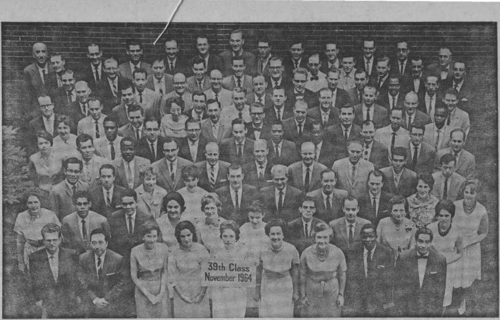

Apathy Can Ruin Your Home
PAGE 5
Australia’s Change to Decimal Currency
PAGE 9
How Should Homosexuality Be Viewed?
PAGE 14
How to Read the Ads
PAG EE 2 I
JANUARY 8. 1965
THE REASON FOR THIS MAGAZINE
New* source* that are able to keep you awake to the vital issues of our times must be unfettered by censorship and selfish interests. "Awake!" has no fetters, it recognize* facts, faces facts, is free to publish fact*, it is not bound by political ties; it is unhampered by traditional creeds. This magazine keeps itself free, that it may speak freely to you. But it does not abuse its freedom. It maintains integrity to truth.
The viewpoint of "Awake!" is not narrow, but is international. "Awake!" has its own correspondents in score* of nations. It* articles are read in many lands, in many languages, by millions of persons.
In every issue "Awake!” presents vital topics on which you should be informed. It features penetrating articles on social conditions and offers sound counsel for meeting the problems of everyday life. Current news from every continent passes in quick review. Attention is focused on activities in the fields of government and commerce about which you should know. Straightforward discussions of religious issues alert you to matters of vital concern. Customs and people in many lands, the marvels of creation, practical sciences and points of human interest are all embraced in its coverage. "Awake!" provides wholesome, instructive reading for every member of the family.
"Awake!" pledges itself to righteous principles, to exposing hidden foes and subtle dangers, to championing freedom for all, to comforting mourners and strengthening those disheartened by the failures of a delinquent world, reflecting sure hope for the establishment of God’s righteous new order in this generation.
Get acquainted with "Awake!" Keep awake by reading "Awake!"
Published Simultaneously in th* United States by the WATCHTOWER BIBLE AND TRACT SOCIETY OF NEW YORK. INC. 117 Adams Street Brooklyn, N.Y. 11201, U.S.A.
and in England by WATCH TOWER BIBLE AND TRACT SOCIETY Watch Tower House, The Ridgeway London N.W. 7, England N. H. Knorr, President Grant Suites, Secretary
Printing this issue: 4,250,000
M i eopy (Airtnlla, 54; South Africa, 3‘Ac)
YeirJy subscription rates 01m for semimonthly editions
Cinada, ISO Brldjeland Atl, Toronto 19, Ont.
England, Watch Tower House,
Naw Zealand, 621 New North Rd., Auckland 8.W. 1
SMth Africa, Private Bag 2, P.O. Elandsfontein, Tri.
(Maatbly edltlant cost half tli above rates,) ftanlttaRtu for subscriptions should be sent to tbs office in your eooutry. Otherwise send your remittance to Brooklyn. Nrtlet af expiration Is sent at least two isroes before subscription expires.
Now published in 26 languages
Semi monthly-'Afrikaans, Cebu-Vlsayan, Danish, Dutch, English, Finnish, French, German, Greek, Ilccano, Italian, Japanese, Korean, Norwegian, Portuguese, Spanish, Swedish, Tagalog, Zulu.
Monthly—Chinese, Cinyanja, Hiligaynon-Vlaayan, Malayalam, Polish, Tamil, Ukrainian,
- "L “■ '
CHANGES OF ADDRESS should reach is thirty lays before your moving data. Give is year old and new address {If possible, yoir old address label). Write Watch Tower, Watch Tower House, The Ridgeway, London N.W. 7, England,
Entered as seoond’Eiass matter at Brooklyn, N.Y, Printed in England
Thi Bible translation ngilarly lied In "Awake!" Is the New World Translation of the Holy Scrlptifss, 1W1 tdltlen. When ether translations are used, this h dearly marked.
CONTENTS
Australia’s Change to Decimal Currency
Karroo Fossils Puzzle Scientists
How Should Homosexuality Be Viewed?
Two Hours in a Hurricane-tossed Sea
When the End Does Not Justify the Means
Watchtower Bible School of Gilead
World’s Longest Suspension
“Your Word Is Truth”
Watching the World
BIG is what a healthy normal boy is eager to become. He wants to grow up as quickly as possible so as to be like his father. But he has to exercise patience, for there is not much he can do about hurrying the process. Time and genes have much to do with such things as physical size. However, it is largely up to you as to how big in heart you become. The bigger in heart you are, the more you are able to manifest a loving attitude toward others, the happier you will be and the happier you will make those with whom you have to do.
Among the ways you will betray if you are big in heart is by the importance you attach to little things, to trifles. Little things? Yes, little things, such as race color, for example. Those who have made a study of the differences in skin color assure us that all differences in skin color are due to the amount of the pigment melanin in the skin. And do you know how much melanin accounts for the difference between the whitest "white” person and the blackest “black” one? One twenty-fifth of an ounce, or about one fifty-thousandth of the total weight of the average man.
Yet there are some persons to whom that one twenty-fifth of an ounce makes all the difference in the world. Thus a United States southern editor told of having recently visited Atlanta, Georgia, and having come upon a swimming pool where now Negroes as well as white persons are permitted to swim. Lining the pool were some white persons who did not like what they saw and were making that very evident. “They were gripped by an almost hypnotic fascination. Their lips were drawn back,... eyelids narrowed, eyes glazed. They were really not seeing, yet they could not remove their eyes from the dazzling sunlit Images before them. Their bodies must have been numb, for they were absolutely rigid; they sat or stood for minutes at a time, motionless.”—Look, August 11,1964. What pettiness of spirit, of mind and of heart those onlookers betrayed! What grounds did they have for their attitude? None whatever. No race has the monopoly on education, on culture, on virtue. Does not the Bible show that all races have Adam as their ancestor; that Jehovah God “made out of one man every nation of men”? Besides, is it not God’s will “that all sorts of men should be saved and come to an accurate knowledge of truth"? Truly,
BIGIN
HIH1T
race prejudice, race oigorry, race xanuu-cism betrays a little heart. And not only does it make all those afflicted with it unhappy, even as it makes its victims unhappy, but it also dishonors the Creator who made man in the first place.—Acts 17:26; 1 Tim. 2:4.
Another way in which you betray whether you are big in heart is by the way you react to slights or offenses against you, accidental or intended. Are you “a little pot, soon hot”? The Bible tells us that “the insight of a man certainly slows down his anger, and it is beauty on his part to pass over transgression.’’ Yes, “it is a foolish person that makes known his vexation in the same day, but the shrewd one is covering over a dishonor.” The person who is big in heart does not readily give way to anger, does not immediately advertise his annoyance or vexation; he does not “boil over quickly.” He makes allowances. —Prov. 19:11; 12:16.
A great aid in this respect, in addition to reasonableness, is love. Love makes for bigness of heart, for “it does not keep account of the injury.” Love will keep you from making a mental note of every offense for the purpose of paying back in kind, and perhaps with interest! As the apostle Paul goes on to observe: “It bears all things, believes all things, hopes all things, endures all things.” To the extent that you do these things you show that you are big in heart. All this, it might be said, is in striking contrast to the way even heads of nations time and again play a petty game of retaliation, and heads of the world’s leading nations at that!—1 Cor. 13:5, 7.
In fact, nothing less than justice requires you to be big in heart, for “just as you want men to do to you” is the way you should do to them. Logic, too, requires that you be large of heart, because all of us are sinners ana we are ail inoeoiea ro uoa. God is big in heart, he forgives in a large way, even as we read: “Let the wicked man leave his way,. .. and let him return to Jehovah, who will have mercy upon him, and to our God, for he will forgive in a large way” And how fortunate it is for us that Jehovah is big in heart, for as one of his psalmists once expressed it: “If errors were what you watch, O Jah, O Jehovah, who could stand? For there is the true forgiveness with you." Do you forgive in a large way or do you watch errors?—Luke 6:31; Isa. 55:7; Ps. 130:3, 4.
Then there is religious prejudice. How small must be the heart of a person who blames each Jew today for what his forefathers did more than nineteen hundred years ago!
By taking sides in the “battle of the sexes” many others betray littleness of heart. A man with a big heart will not disparagingly say, “Humph! Just like a woman!” nor will a large-hearted woman condescendingly remark, “All men are just little boys!”
Members of a Christian congregation might be said to be under particular obligation to show bigness of heart toward one another. In what he was willing to endure for his fellow Christians the apostle Paul certainly showed that he was big in heart; he had deep love for them. (2 Cor. 11:23-33) Some, such as the Christians at Philippi, responded in the same way, but others made it necessary for Paul to write them, for their own good: “Our mouth has been opened to you, Corinthians, our heart has widened out. You are not cramped for room within us, but you are cramped for room in your own tender affections. So, as a recompense in return . . . you, too, widen out.”—2 Cor. 6:11-13.
Yes, for mutual happiness widen out— be big in heart!
In many homes family relations are strained. What can you do to improve the situation?
66xvriLL THE W FAMILY
DISAPPEAR IN
FIFTY YEARS?” This front-page headline of one of Toronto’s (Canada) leading newspapers captured attention early this year. “It is quite possible that by 2014 the family may disappear as a unit of society, and other units based upon age groups and interests may take its place," prominent educator Dr. R. W. B. Jackson explained. He said that the home may develop into merely a “breeding, feeding and sleeping station, only with most features automated.” Is there any basis for such a prediction?
Although the disappearance of the family may seem unlikely, there is no question that the past generation has seen a deterioration in the relationship between family members. Each member often goes his own way, showing little concern for the interests of others. “Many homes are little more than service stations,” observed educator-writer Alan Valentine in his book The Age of Conformity. “Most families do not get together; they only live together. They do not communicate ideas, but debate practical immediacies such as who will use the car this evening or what television channel can be agreed upon.”
This indifferent attitude is contributing to the ruin of such a great number of homes that some persons actually feel that the existence of the family is threatened. In the United States alone about 400,000 couples each year drift apart, obtaining permanent releases through divorce. This is an*average of 1,096 divorces a day, forty-six an hour, . nearly one every minute! Since apathy is a major factor in the breakdown of the family, you will want to be on guard to keep it from ruining your home. What can you do to be sure that it does not?
What Husbands Can Do
To begin with, you will want to examine your attitude toward your wife and home. It is easy for a husband who has many responsibilities to become thoughtless and take his wife and the things she does for him for granted. This is a major shortcoming, as Dr. Paul Popenoe pointed out: “Nearly the commonest story known on the subject of unhappy marriages [is] the wife who feels neglected by her husband and becomes a willing listener to someone who assures her that she deserves a better life." This certainly emphasizes the importance of showing interest in your wife, is that not true?
You may feel that you do—providing her with a comfortable place to live, nice clothes to wear, medical care when she is sick and sufficient money to operate the household—but more is needed. You need to spend time with her and do little things to give her the assurance that you really care. Failure to do so has started the rift that has ruined millions of homes. Consider a typical example of an attractive twenty-six-year-old wife who felt sure her husband no longer loved her, even though he provided well for her materially.
“To begin with,” she explained, “he has never once told me he loved me since the first month of our marriage. In the early days he used to .. . he’d never leave home without holding me a moment or two and kissing me good-bye. When he’d come back it was always a big bear hug and kiss. He used to open doors for me and carry in the heavy groceries, and he was always noticing my clothes and commenting on how nice they looked. But now he doesn’t even know it when he kisses me, and he never really looks at me at all. Shortly after we were mabried, I just ceased to exist except when he wanted me . . . physically. I... I began to hurt inside.”
Although this man said he really did love his wife, his indifference was ruining their home, even without his realizing it. This may be something for you to consider. Is preoccupation with your own affairs and failing to think about the interests of your wife having a similar effect on your home? If so, you will want to take steps to dispel your apathetic attitude.
Think how you originally won the heart of your wife so that she wanted to spend the rest of her days with you. Was it not by taking an interest in her, taking into consideration what she enjoyed doing, and by your doing things together? You probably made an effort to carry on an interesting conversation with her, is that not so? Very likely you were also alert to notice her appearance—that new hairdo, her pretty dress or, simply, how attractive she looked—and you did not hesitate to compliment her. And it is likely that from time to time you gave her little gifts as tokens of affection. Yes, it was this concern, attention and doing things together that made for the pleasant relationship the two of you enjoyed.
Is there any reason why you cannot continue to show a similar interest now, even if it is many years since your marriage? There really is not. It simply means that you will again have to make a conscious effort to do so. But actually this is your obligation, for the Bible says: “Husbands ought to be loving their wives.”—Eph. 5:28.
So look for opportunities to show love for your wife, not only by endearing words but by little things you can do for her. Show an interest in what she has done, notice little changes she makes in the house or in her clothing, compliment her and express appreciation to her for keeping the house clean, preparing meals and for the many other tasks she performs. Be considerate of her feelings and problems. For example, if something comes up and you will be late for dinner, be thoughtful enough to notify her so she can plan the meal accordingly.
Rather than thinking in terms of just yourself and what you want to do, think in terms of two. Do not always be going off by yourself fishing, plopping yourself in front of a television screen, oblivious to everything else, or hiding away in your workshop. Instead, be on the lookout for activities that the two of you can enjoy together. Try to develop an interest in things your wife likes and endeavor to help her appreciate your interests. The more things that you enjoy in common, the greater likelihood there is that the two of you will be happy.
With this in mind you should not overlook the importance of worshiping God together. One survey disclosed that of three factors most common to happily married couples, an active religious affiliation was the most important. So develop the habit of reading the Bible together and of discussing its righteous principles and grand promises. Express yourself in prayer with your wife, asking God to help both of you to live in harmony with Ms Word. Doing things together, especially worshiping God with each other, can result in a closeness and a happy home.
Apathetic Wives
It is not unusual for women to complain, "My husband doesn’t take an interest in me anymore, he is hardly ever at home, and when he is, he makes no effort to talk to me.” Have you ever voiced a similar complaint, or at least felt like doing so? Instead of immediately blaming your husband, it would be wise to consider whether you have been indifferent toward his wishes and feelings, rather than giving him the respect due him. Have your actions been in harmony with the Bible instruction: “The wife should have deep respect for her husband”? Perhaps your indifference has been responsible for his attitude. —Eph. 5:33.
For instance, what do ybu look like when your husband leaves for work in the morning? Is your hair still up in curlers, your face unwashed, and are you in an old robe or sloppy dress? How about when he comes home? Is your appearance much the same? Now, think: Would your husband have continued to call on you before you were married if you gave such little attention to your appearance? If he would not, why are you so indifferent now?
On one occasion the wife of former United States President Dwight Eisenhower was very outspoken on this matter: “A wife does not have to be ‘dolled up* in expensive clothes all the time,” she said, "but I think it is dreadful for a pretty bride to go around in cold cream or curlers, or a sloppy dress. Whoever heard of a secretary wearing a spotted dress to work because ‘It is just the office and no one will see me but the boss.’ Your husband is the boss, and don’t you forget it.”
It is natural that your husband should want you to look neat and attractive. So be sensitive to his wishes and respect them. Be observant of his reactions. It simply does not make sense for a woman who has married a husband to feel that she can now let herself go, become sloppy, and perhaps succumb to het appetite and expand all out of proportion. If you care about your appearance, your husband probably win also. It will be an encouragement for Mm to spend his evenings with you.
Of course, if you take care of your own appearance but are indifferent as to what the home looks like, this is not good either. Certainly a messy, dirty house and a cold, tasteless meal are not tMngs to attract a husband home! While it is true that you may have outside interests of a commendatory nature, such as the Christian ministry, yet you still have the obligation to keep a neat, clean house and have a well-prepared meal ready when your husband comes home. In this way also you render your husband the deep respect that is due him.
While one of the chief complaints of women is that their husbands do not talk with them, the reason may be due to their own apathy, as one woman pointedly said: "The blue-ribbon reason why men don’t talk to their wives is simply that we’re such poor listeners.” Is this true of yourself? When your husband speaks, do you butt in, leaf a magazine or have your ear tuned into some other matter? Failure to show genuine interest in his opinions and feelings is certainly not exhibiting deep respect. Instead, it discourages Mm from talking with you beyond the essential exchanges of perhaps "Pass the butter, please,” or “Where’d you put my shirt, dear?”
Your interest can be a tremendous help to your husband. The problems of the day may be on his mind, and an understanding ear can be a sounding board for his thoughts. It will help him to see things in their true perspective, and perhaps your intuition may provide a ray of light on matters. But you need to have empathy, discerning the time to speak and when to be quiet and listen. By attentiveness and genuine, sympathetic interest, you can build up your husband, giving him assur-ance and confidence. This will serve to bring the two of you closer together. Certainly it is well worth the effort, is it not?
Disciplining Children
Besides just a husband and wife, a family often includes children, and the question as to how to raise these offspring presents a problem. Shall it be according to modern philosophers who maintain that “homes where discipline is lax are more likely to be happy and well adjusted,” and that “in an effective plan of discipline there is no place for corporal punishment”? Or will they follow the Scriptural admonition: “Chastise your son while there exists hope,” for “the one loving him is he that does look for him with discipline”? (Prov. 19:18; 13:24) Most modern parents have rejected the Bible counsel, and the resulting shameful conduct of their undisciplined children has brought ruin to the home.—Prov. 29:15.
Indifference to Bible instruction leads to the ruin not only of the parents’ home, but, later on, of the homes of their children as well. Recently Dr. Mary C. Calderone said that reliable statistics show that “one out of every five United States brides is pregnant on her wedding day.” Certainly a poor way to start a happy home life! But why? What is responsible?
“The dilemma, of course, is of our own making,” Dr, Calderone said. “We have in the last 15 years lifted all forms of discipline and control and substituted nothing for them. We have given our children the keys and free access to cars, money with which to go to motels, empty houses and apartments, while mother and father are off golfing and playing bridge or what-have-you, and few rules about anything, including sex.” (New York Times, May 27, 1964) The failure of indifferent parents to take an interest in their children by providing the necessary discipline is what is responsible!
That children need to have explained to them what is right and what is wrong, and then be required to obey is illustrated by what a young teen-ager said about her mother. “She doesn’t enforce any rules. Often I go to my room, throw things around, get mad and drive at high speed, and when she is trying to discipline me by hurting me emotionally, I get terrible headaches. . . . How can I love a mother I control?”
It is evident that children need firm discipline as well as loving attention and guidance. So work with your children, play with them and at every opportunity instruct them as to what are proper conduct and manners. Cultivate in them the desire to be pleasing to God by doing what is right. Teach them to shoulder responsibility. Assign them tasks that need doing around the home, such as mowing the grass, raking leaves, setting the table, washing the dishes, taking out the garbage, making their own beds, vacuuming the rugs, and so forth. Commend them for their efforts, Det them know that it is necessary work and that you appreciate what they are doing.
If both of you take an interest in each other—the husband showing love and concern for his wife and she exhibiting deep respect for her husband—and each of you take a genuine interest in guiding, instructing and disciplining the children, you can be confident that apathy will not ruin your home.
materialistic world gy "Awake!” correspondent in Australia of today. Maybe had he lived today, he would have said: “That which we call a pound, by any other name . . . unless he lived in Australia. Here a pound by any other name can cause a controversy! And, in fact, it did! When treasurer Harold Holt announced the Cabi
SSTVrHAT’S in a VV name? That which we call a rose, by any other name would smell as sweet,” said Shakespeare; but then, he did not live in this net’s decision on June 5, 1963, to call the basic unit of the proposed new currency the “royal," strong voices rose in protest An editorial in the Daily Telegraph, Sydney, June 7, said:
“The cheers and jeers which have greeted the birth of the ‘royal’ must have been expected whatever the name chosen for Australia’s decimal currency unit.
“If it had been the ‘dollar,’ the American influence would have been condemned. If ‘Austral,’ the aesthetes would have booed. If ‘pound,’ the confusion with other pounds would have been criticised, and if ‘koala’ or ‘roo’ the zoo would have been blamed. Controversy is inevitable.”
The Prime Minister and Treasurer considered 998 suggestions before deciding on the name “royal." Popular opinion polls taken in August-September 1963 showed that only 14 percent favored “royal” as a new name for the unit, while 67 percent favored “dollar.” Finally, when read in parliament in October 1963, the Currency Act (8.-(l)) stated:
“The monetary unit, or unit of currency, of Australia is the dollar.”
Popular opinion had won the day and Australia had laid plans to join the ranks of the “dollar” countries in 1966.
2Vo New Idea
Decimal currency is not new to Australia. Australia’s first bank, The Bank of New South Wales, kept its official records in Spanish dollars as far back as 1822. It issued its own Spanish dollar notes until 1829. This, of course, was not by act of parliament, but simply because there were more Spanish dollars in circulation than sterling currency at the time. Gradually, however, dollars lost ground, and pounds, shillings and pence took over.
A committee appointed by the first Australian parliament in 1901 recommended that decimal currency be adopted. A Royal Commission in 1937 made a similar recommendation, as had a Select Committee in 1920-23, and the Empire Decimal Association in 1926. Eventually, the present government, having announced its intentions during the 1957 federal election campaign, appointed a seven-man committee in 1959 to investigate the advisability of a changeover. The Committee's report, in 1960, not only recommended the change, but advised that *‘. .. the Commonwealth Government is urged to announce its decision at the earliest practicable date.”
JAWARY 8, 1965
It seems that the earlier attempts to introduce decimal currency here may have met with failure because of efforts to bring the United Kingdom into the proposed changes. The then treasurer, Sir William Lyne, said, on November 3,1908, that the Government would not adopt the system unless the Imperial Government did so. The question had been discussed in the United Kingdom for more than 150 years, ■and examined by a number of royal commissions. A motion was put before the House of Commons as far back as 1824.
Decimal currency as we know it was first introduced by the United States in 1792, France followed in 1799 and the trend spread throughout Europe and Asia. Most decimal currency countries adopted it in the nineteenth century. During the last fifty years, Egypt (1916), East Africa (1922), Aden (1951), Cyprus (1955), India (1957), South Africa (1961) and others have made the change, leaving very few major countries without decimals. Not including Australia and New Zealand, which propose to make the change, this will leave Eire, Ghana, Nigeria, Pakistan, Rhodesia and the United Kingdom.
Advantages
Because the method of notation throughout the world has for centuries been based on the decimal system, with no other system successfully opposing it, we have become used to counting in tens. Why, then, should we not count our money in tens? Take, for example, a child at school. First he is taught to count in tens. Then many pupil and teacher hours are spent teaching him another system applying to money, in fact, a more complex system involving arbitrarily imposed groups of numbers: 12 pence equal one shilling, 20 shillings equal one pound. With the decimal system introduced, the child would have to learn only once. As soon as he can add, subtract, multiply and divide ordinary numbers, he can add, subtract, multiply and divide money amounts. Thus a child who is slow in mathematics in 1964 may, having greater confidence in himself because of the simplicity of decimal currency, pass with flying colors in 1966.
Apart from the psychological effect on the child, great savings will be effected in time. The professor of pure mathematics at the University of Melbourne, E. R. Love, reported to the Decimal Currency Committee:
“Months, if not years, of school time spent on practicing money sums could be saved, and teachers could use this time to help their pupils to a more adequate understanding of mathematics.” The Australian Teachers Federation claims that a child would save nearly two years of the seven spent in South Australia at the primary stage.
How will decimalization affect those of us who have already been educated in £.s.d.? While it is true that the changeover period will be difficult, and elderly people may find it extremely hard to get used to new currency, in the long run it will be much easier and simpler. No change in thinking is required, only a wider application of our usual method of notation.
Think of the time it will save! Let us take an example. A housewife enters a shop to purchase 56 yards of material at £1. 8. 6. per yard. She is allowed a discount of 10 percent and proffers eight £10 notes to the salesman. Apart from the time taken to select and wrap the goods, let us take the time involved in calculations here. When asked to calculate
the net cost and the amount of change to be given, the salesman tested took seventy seconds. Being a thrifty and careful housewife, she will want to check the calculations. The housewife used in the test took nearly twice as long as the salesman, 135 seconds, thus making a total of three minutes twenty-five seconds. Now suppose it is 1966 and the same situation arises, except that decimals are in use. The housewife still wants 56 yards of material at the same price expressed in decimals, $2.85, less 10 percent discount Try it, and see how much less time it takes. The salesman worked the problem, giving change from $160.00, in thirty-two seconds! The housewife took only sixty seconds to check—a total saving of only seven seconds short of two minutes. Thirty purchases of a similar nature and nearly one whole hour is saved! Imagine the clerks, salesmen, bookkeepers, accountants and hundreds of other people involved in money calculations; in fact, 8 percent of the work force in Australia! It can readily be seen that the time saved is considerable.
In addition to the time saved in calculating money sums there is the time taken in writing them down, or pressing the keys on a machine or cash register to record them. For example, to write £1.17.6 involves four figures. The same amount in decimal currency would be written $3.75— only three figures. Now, while to many of us, who seldom write down money amounts, or do so only a few times each day, this would not amount to much, to the machine operator who spends all day every day doing so, it will mean a considerable saving in time and effort, not to mention the time saved because of greater accuracy, since she now has just that many figures less to care for.
Suppose now that you are a “New Australian,” a migrant from Europe, in 1966. You will not have to learn a complicated new monetary system; but will be able to adopt one with which you are already basically familiar.
Overseas commerce and trade records will be simplified, since most major countries, with the exception of Great Britain, already use decimal currency, and while their dollars may not equal the Australian dollar in value, much time and effort will be saved.
Disadvantages
Perhaps the greatest disadvantage will be the confusion during the changeover period, and the immense expense involved in converting the thousands of machines from £.s.d. to decimals. It is estimated that it will cost the Government £30 million in compensation alone.
Since most existing notes and coins, with the exception of the halfpenny, penny and threepence, are interchangeable, this will not leave room for dishonest and unscrupulous men to take advantage of the shopper in a very big way. Nevertheless, shoppers will need to be wary, as initially some may take advantage of the confusion to Increase the normal price. Most stores will display prices in both currencies during the changeover, but it would be wise to check these against the conversion tables.
Slight inflation could be caused due to the fact that there will be no equivalent to the existing penny. For example, a newspaper that now sells for 5 pence, when expressed in decimal currency would have to be either 4 or 5 cents. Note that 4c is only equal to 4.8 pence, so the newspapers will lose .2 pence on each paper. With a combined circulation of about a million papers for the four major Sydney newspapers daily, this would reduce their combined income by £800 per day, or a combined annual loss of approximately £300,000. Since it is unlikely that the papers could stand such losses, they will undoubtedly raise
the price to 6d (5 cents) either before the changeover or at that time.
The same principle that applies to newspapers will apply to other smaller items in the competitive fields such as groceries. This, however, will be offset to some extent at least by retailers who mark items one penny below the whole shilling or pound price, such as 19/11. That is £1.0.0. less Id. In decimal currency, since this practice will most likely continue, the same price would be expressed as $1.99, or $2.00 less lc. This will mean a saving to the purchaser of the difference between lc and Id, that is .2 of a penny.
All these disadvantages are considered slight in comparison with the many advantages. Most of the disadvantages will be nonrecurring, whereas the advantages, the savings in time and effort to the community will be permanent or continuous. The high standard of education of the average Australian and the ability to adapt himself to new situations should help.
The System and Coins Chosen
Of the five major systems suggested to the Decimal Currency Committee, the “10 shilling-cent” system was recommended and later adopted by act of parliament. The systems having the £1 as their major unit were not satisfactory in that, while they allowed all existing records in whole pounds to remain unaltered, there was no associability with present values under £1, and long complicated conversion tables would be required. Systems with lower unit values, such as the 5 shilling-cent system and the 8s4d-cent system, were rejected because of the lack of associability and the low major unit compared with the present high unit of £1.
The 10 shilling-cent system was chosen as superior, since, being a two-decimal system, it satisfies the need for simplicity and is easily understood. The key to the system is the existing 1/-, the dollar being made up of 10 such familiar shillings. All existing coins, with the exception of the halfpenny, penny and threepence, will interchange. A £10 note will be exactly equivalent to $20, £5 to $10, £1 to $2,10/-to $1, 2/- to 20c, 1/- to 10c, and 6d to 5c. Conversion tables will be necessary only to obtain the equivalent of pennies. Thus, for example, an item marked 3/6d would simply be 35c.
A quick check can be obtained by simply doubling the pounds and adding one if the shillings are more than 10, and these become dollars, leaving the remaining two figures as cents. At the most you could only be one or two cents out. A more accurate check can be made by converting the whole amount to shillings and pence, .expressing, say in the case of £10/15/9, as 215/9. Check the conversion table for the decimal equivalent of 9d and change your figures thus: 215/8. Now change the (/) to a point (.) and at the same time move it one place to the left and you arrive at the correct answer, $21.58.
The following conversion table will be necessary for converting the pence, and shown alongside are the coins that will be in use.
Silver and copper, larger and thinner than Id
Id = 1 cent 50 cents = 5/-
2d =2 cents
|
3d =2 |
cents |
20 cents = 2/- |
|
4d =3 5d =4 |
cents cents |
10 cents = 1/- |
|
6d -5 7d =6 |
cents cents |
5 cents = 6d |
|
8d =7 9d =8 |
cents cents |
2 cents = 2.4d |
lOd - 8 cents lid = 9 cents 1/- -10 cents
lcent =1.2d
Cupro- nickel, same size and weight as 2/-Cupro- nickel, same size and weight as 1/-Cupro- nickel, same size and weight as 6d Bronze, halfway between 6d and 1/- in size
Bronze, slightly smaller than 6d
Changes Necessary In Business
Machine conversion, depending on the age of the machine, will be carried out on a priority system at the expense of the Government, and at their direction. Machines should have been registered for conversion by now. Some machines, by losing some of their capacity, may be temporarily converted by simply blocking off the shillings and pence columns. The manufacturers of the machine will be able to advise how best to do this, and possibly alter the punctuation so that the machine may be used while awaiting conversion.
Internal records, wages, cashbooks, ledgers, journals, stock records, bank records, and so forth, will all need to be changed, even the petty cash. Balance sheets and sales analyses would well be expressed in both currencies for analysis purposes, for a time at least
Receipts, checks, invoices, statements, and so forth, will have to be converted, and it may be necessary to express at least the total amounts of invoices and statements in terms of both currencies to avoid confusion to the purchaser. If ordering large quantities of stationery now, it may be well to design the monetary columns so that both currencies can be expressed.
The staff will not only need to be trained in how to calculate in terms of dollars and cents, to enter up and balance in dollars and cents, but they will also have to learn how to explain dollars and cents to the customers. This latter may prove to be the biggest problem. Businessmen would do well to go through their operations with a fine-toothed comb, making a check list of paper work to be altered, machinery to be adapted and staff that will need training.
Banks will receive priority in machine conversion and will close for three days to make the changes required. They will open on “D” (for Decimals) day, operating in dollars and cents. You will be able to bank your £.s.d. or withdraw f .s.d., but checks, deposit and withdrawal slips will have to show the amounts in dollars and cents.
As “D” day approaches, conversion tables will be issued and posted in all public buildings, decimals will be more familiar and much of the initial "fear” of the idea will have worn off. Australian children, who have already started this year on an interim syllabus to learn decimal currency, will soon be asking their parents, "Daddy, what WERE pounds, shillings and pence?”
Karroo Fossils puzzle Scientists
In the Karroo sandstones in South Africa scientists have found great quantities of fossil remains, which, they hoped, would give them a better insight into evolutionary theories. However, the scientists are puzzled. Why? The Scientific South Africa, March 1964, commented: "Whereas from the geological point of view the Karroo sandstones are a record of continuous deposition, the fossils found in the beds do not represent continuous evolution. In other words, there is no geological evidence to suggest a climatological reason for the relatively abrupt emergence and subsequent disappearance of the extinct species which are chronicled within the Karroo deposits. At present, existing collections of Karroo fossils provide little more towards a solution of the problem than inviting scientists to stare at them until some revelation occurs.” Yes, instead of proving an evolution, these findings prove what the Bible says, namely, that God created the animals "according to their kinds.”—Gen. 1:24.
LITTLE does the average person realize how extensively homosexuality is practiced in modern society. Those who engage in it number in the hundreds of thousands. Some have formed organizations that even publish magazines that are centered on their practice. The desire of these sexual deviates is to get legal and social prohibitions of homosexuality removed. They want people to view the practice with tolerance.
Supporting a tolerant view of homosexuality, clergyman John W. Stevenson of the Church of Scotland said: “Homosexuality in itself is a condition which carries no stigma and for which the individual bears no responsibility.’’ Expressing a similar view, Sigmund Freud, the psychoanalyst, stated: “Homosexuality is assuredly no advantage, but it is nothing to be ashamed of, no vice, no degradation.” These views are not the view held by man’s Creator. Being the Almighty God, he is in the position to establish the correct view of it.
More than 1900 years before the earthly ministry of Jesus Christ, God showed in a dramatic way how he views homosexuality. The cities of Sodom and Gomorrah were filled with sexually degenerate inhabitants. When two materialized angels visited Lot, a resident of the city, the men and boys of Sodom clamored for sexual relations with them. “Bring them out to us that we may have intercourse with them.” (Gen. 19:4, 5) They failed to carry out their desires, but their depraved practices caused the name of their city to become the basis for the word “sodomy.” Sodomy is unnatural copulation with a person of the same sex. It is a detestable practice in God’s eyes.
God destroyed the cities of Sodom and Gomorrah because of their depravity. They lustfully went “after flesh for unnatural use,” the Bible says, and they “are placed before us as a warning example by undergoing the judicial punishment of everlasting fire.” (Jude 7) This was how God expressed his view of sex perversion.
To his chosen people Israel God gave a law prohibiting homosexual practices. “You must not lie down with a male the same as you lie down with a woman. It is a detestable thing.” (Lev. 18:22) The penalty he laid down for such sex deviation was death, the same punishment that he brought upon the inhabitants of Sodom and Gomorrah. “Where a man lies down with a male the same as one lies down with a woman, both of them have done a detestable thing. They should be put to death without fail.” (Lev. 20:13) With the coming of Christianity God did not change his view of homosexuality.
The Creator inspired the apostle Paul to tell Christians, some of whom had practiced homosexuality before becoming Christians, that homosexuals will not be permitted in his heavenly kingdom. “What! Do you not know that unrighteous persons will not inherit God’s kingdom? Do not be misled. Neither fornicators, nor idolaters,
nor adulterers, nor men kept for unnatural purposes, nor men who lie with men , . , will inherit God’s kingdom.” (1 Cor. 6:9, 10) Nor will their way of life be approved on the earth under the rule of that heavenly kingdom in God’s righteous new system of things.
Cause of Homosexuality
Homosexuals are not born sex perverts. They become such by their own choosing. It is not a glandular defect or any other physical defect. On this point Science News Letter of June 21,1958, says: “The homosexual is the victim of his own emotional problems and environmental factors, not a victim of hormonal imbalance, alcoholism or genius.” He is no different physically from persons with normal sex drives.
It is a mistake to conclude that the homosexual suffers from a mental illness for which he cannot be held accountable and therefore his aberration should be viewed tolerantly. Rather than being a mental illness it is a moral illness, an illness that results from his extreme selfishness and greed for sensual pleasure. The confirmed homosexual engages in sex perversion willfully, knowing full well that it is a practice that is contrary to nature and violates the laws of God and men. His perversion is of his own choosing. That is the reason why 96 percent of 300 homosexuals who were asked in a poll if they would want to change said they would not. They have “come to be past all moral sense” and have given “themselves over to loose conduct to work uncleanness of every sort with greediness.”—Eph. 4:19.
Since homosexuality is not an incurable defect but an aberration resulting from the homosexual’s greed for lustful pleasure, God has allowed him to consume himself in his fleshly desires and to receive in return the bad fruits that his unnatural course brings. “That is why God gave them up to disgraceful sexual appetites, for both their females changed the natural use of themselves into one contrary to nature; and likewise even the males left the natural use of the female and became violently inflamed in their lust toward one another, males with males, working what is obscene and receiving in themselves the full recompense, which was due for their error.” (Rom. 1:26, 27) That recompense includes venereal disease (which is high in homosexuals), emotional instability, fears, frustrations, fierce jealousies, unhappiness, neuroses, loss of moral sense in anything that involves their selfish desires, and alienation from God.
A homosexual can become acceptable to God by stopping his unclean practices and seeking divine forgiveness. He can stop if he really wants to. The desire for God’s approval can give him the strong incentive he needs for making his mind over.—Rom. 12:2.
How Identified
Contrary to general belief, a male homosexual is not easily identified. Only a small number are effeminate in their mannerisms and a still smaller number go to the extremes of using cosmetics and perhaps dressing in feminine attire. But effeminism does not necessarily mean a person is a homosexual. Many men who are not homosexuals have effeminate mannerisms. On the other hand, there are big, burly fellows, obviously masculine, who are sexual deviates.
In an article that appeared in Harper’s magazine of March 1963, its author, who had visited several bars in New York City that cater to homosexuals, remarked: “I was far more surprised to see no one who ‘looked’ homosexual. A few were a little too well-groomed or elegant in their behavior, and a few were dressed younger than their age (though all looked to be
under thirty), but otherwise the only noticeable difference was that everyone resembled the dashing young men in college sportswear advertisements.” This same general lack of distinguishing marks is also true of female homosexuals. Some of them, however, make themselves conspicuous by their short hair, manly clothes and tom-boyish appearance.
In large cities there are certain areas where homosexuals usually congregate. Very often these areas have particular bars that cater to their trade. Some of them may select public places where a great many people are coming and going or choose cheap movie houses.
The person who wants to maintain moral cleanness should be alert to avoid these areas where the morally unclean congregate. He should avoid homosexuals like a plague, never consenting; to social fellowship with them. When he sees them loitering about a street corner, a bar or a public lavatory, he should realize that they are not there seeking a friendly chat. They have only one thing on their corrupt minds and that is the god they worship—sexual pleasure. They are sex-worshipers just as much as were the male temple prostitutes who were consecrated to idol gods in the days of ancient Babylon, Assyria and the Canaanites.
Parents should instruct their children to beware of strangers who show unusual interest in them. There are homosexuals who seek to seduce young boys and make homosexuals out of them. There was an example of this in Vancouver,! Canada, where some homosexuals seduced thirty-five young boys who were mostly in the ages from ten to fourteen. Once they had corrupted the boys, they recommended them to then-friends and charged for making the introductions. There also are homosexual women who strive to seduce young girls. Follow the Bible’s counsel: "Do not be misled. Bad associations spoil useful habits.”—1 Cor. 15:33.
Parents can help their adolescent boys to avoid the trap of homosexuality by giving them good counsel. During this period of their personality development, it is not unusual for them to experience feelings of attraction for members of their own sex. Unless they have been property instiucted by their parents and taught to apply the moral standards of God’s Word, they might become involved in homosexual experiences. For this reason self-control must be exercised at all times whether with the same or the opposite sex.
The proper view of homosexuality is the view God has taken of it. Whether homosexuals succeed in causing laws against homosexuality to be changed or not, it should be viewed as an abominable thing that leads its willing victims in the way of death.
• The problem of clearing weed-choked waterways In British Guiana Is betafc dealt with by using living mowers, those rare water-dwelling mammals called manatees. These large, robust creatures may weigh some 450 pounds, and, being strictly vegetarian, they consume from sixty to a hundred pounds of seaweed a day. With valvelike nostrils, manatees can stay submerged for fifteen minutes or more, while dining on underwater plants. Some seventy of these saaweedr devouring mammals have proved effective in clearing canals in British Guiana, saving the government thousands of dollars that would otherwise have to be spent on the fight against water weeds.
THE three of us were standing high up on the rocks, nearly thirty-five feet above the pounding surf. When the spray from a tremendous wave splashed over us, I jumped farther back on the rocks. My husband and twelve-year-old brother followed. But since my brother enjoyed the spray, he went back again and waited in a little cove in the rocks that he considered safe.
There was a lull in the intensity of the waves for about five minutes, and there seemed to be no immediate danger. Then, all of a sudden, without warning, a monstrous wave engulfed the rocks below, completely concealing my brother from sight. It seemed forever before the swirling, foamy
TWO HOURS
IN A
HURRICANE -TOSSED
SEA
At told to an “Awake!" itaff writer
lights. When I reached the house I could hardly speak, but was able to make them understand that someone was in the ocean and would they please call the police.
Hurricane Gladys
What had prompted our visit to the shore on the evening of September 23 was the news that hurricane Gladys was many miles off the Rhode Island coast. From past experience we knew that this would mean there would be gigantic waves crashing against the rocks. Restless waves breaking over a rocky coastline are fascinating to watch at any time, but when these waves are whipped by the edge of a hurricane they are beautiful beyond description. Many sight
water rushed back down the rock cliff again. I strained to see if he was still crouched there, but my heart sank in horror when I saw that the rock was empty. We rushed to the edge and spotted him in the water below. Almost at once another huge wave broke over him and buried him from sight.
I had such a hopeless fear; we were helpless in the face of the wild waters below. I felt sure that he would be dashed to pieces. Nevertheless, I scrambled off the rocks and ran a couple of hundred yards up the road to a house where I had seen seers often line the shore to watch the raging sea during these storms.
The Congressional Record, which reported my brother’s ordeal in the sea, commented on the beauty, as well as the danger, of the Rhode Island shoreline at these times, saying: “The lovely summer shoreline on our State becomes monstrously beautiful in the raging surf at Narragan-sett . . . when whipped by the turbulence of hurricane gales. There is a human fascination in the violence of the sea—and there is sudden death in the gigantic waves that sweep in from nowhere.”
It was truly remarkable that the huge waves did not immediately smash my brother to death on the rocks. When I recovered my breath I rushed back to where he had been swept off the cliff. I really did not expect to see him alive again, so I was surprised to hear his voice above the roar of the waves. What a relief to know that he was alive, even though still in extreme danger out there in the hurricane-tossed sea!
Help Arrives
It was amazing how fast help came. Only a few minutes passed before the police arrived on the scene. They spotted my brother in the water and radioed for lights, lines, a portable radio and more help. Less than twenty minutes after he had been swept off the diff, they had powerful lights from nearby fire departments directed on him a couple of hundred yards out in the sea. By now it was about 7:30 p.m., and was rapidly getting dark.
Soon there were a thousand spectators lining the coast watching the rescue attempts. How helpless we felt! The night dragged on, and all we could do was watch. My husband and I huddled together on the rocks, alternating between prayer and wonderment at how the boy was able to stay afloat. Every time he disappeared from sight, we thought that he might never come up. How would we explain to mother, who was probably worrying herself sick because we had not come home on time? How could we break the news to dad, who was up at the Watchtower Kingdom Ministry School at South Lansing, New York, receiving a month of special ministerial training?
Each successive attempt to rescue my brother failed. When a line-throwing gun shot out a line, it was tossed back by the waves. A coastguardsman who attempted to enter the water with a line tied around his waist was immediately knocked down by a huge wave. Efforts to launch a rubber raft met a similar fate. The only hope was a boat. But could a boat come in that dose to the pounding surf without being dashed against the rocks? We hoped so.
It was about 8 p.m. when the crew at the Castle Hill Coast Guard Station received orders to join in the rescue operations. But by then my brother had been in the water nearly an hour, and it would take them more than an hour to reach him. “We figured when we left Castle Hill that we were looking for a body,” one of the coastguardsmen explained. “We just didn’t think anybody could stay in that water that long.”
What they did not count on was that the boy did not panic. Said the police sergeant who continually spoke to him through a bullhorn: “It’s just so unbelievable, it’s fantastic that this boy didn’t panic. All the time the boy was out there he didn’t once mention the word help. He didn’t cry out other than to respond to something I had said.”
What is it like to spend two hours in a hurricane-tossed sea? Suppose we let the one that actually experienced it tell us.
Hurled into the Sea
I wanted to feel the spray from one last wave, so I went down to a little hollow in the rock high above the waterline. Then it happened—a huge wave came and hit the rock behind me, and the next thing I knew I was being lifted out of the htge and thrown over the edge. I went sliding down the smooth rock cliff on my stomach, with my elbows hitting the rock all the way down. It was a long drop into the water, and there was no way to get back,
I thought it was a nightmare and that I would wake up when I hit the water, but not so. Almost Immediately another wave came crashing down and sent me turning head over heels beneath the water. It seemed as though I would never reach the surface again. When I finally came up I knew that I had to get away from shore and out of the breaking waves, so that they would not smash me against the rocks. Fortunately the undertow began to sweep me out to sea. Then a second wave broke over me and sent me down again. This was to happen time and again during my next two hours in the sea.
Struggle to Stay Afloat
When the second wave struck I was down for about forty-five seconds. I knew that if I was to keep afloat I had to get my clothes off, so while I was still under water I unsnapped my rain hat, took off my coat and ripped off my shirt. I got another breath and began to swim farther out, endeavoring to get beyond where the waves were breaking. I kicked off my loafers while swimming. When I got to where there were just huge swells, I proceeded to get rid of my pants. However, they got caught around my ankles and I could not kick my feet. This scared me, but I tried to swim with my feet together, and when I did this my pants were swept away.
By this time I could see little black figures running up and down the shore, but couldn’t distinguish anyone. I heard my sister and her husband yelling, and in a few minutes there were a lot more people on the rocks. It was not long before they set up lights and moved them around trying to find me. A little later a man started to shout to me through a bullhorn, encouraging me to float. All this time I had been yelling to let them know I was still there, and when they started to talk to me over the horn, I answered them.
Once in a while a wave would come and wash me about twenty-five yards in one sweep, but I would swim back within range of the lights again, A few times I was dashed under the water so long that I was forced to gasp for air before I reached the surface. Because the water was so frothy, I must have taken in a mixture of water and air. When I came up I had to cough and spit to breathe again. It was a fight to get enough air to keep alive.
One wave broke so high up on the rocks it washed all the lights off. Of course, I did not know this; I thought they were giving up the search and leaving me for dead and going home! I yelled as loud as I could, I wanted them to know I was still alive.
As they were setting up the lights again, they kept telling me, ‘Just float, don’t try to swim. A boat is coming in five minutes.* But I couldn’t float; the water was too rough. All the time huge waves kept shoving me around and sweeping me in and out, this way and that way. In order to keep them from breaking on top of me,. I would duck under the waves and come up on the other side, as I had learned- to do when playing in the surf. Still no boat.
After a while my hands got numb and my feet too. I had no feeling in them. But I knew that I had to keep paddling In order to keep afloat, I kept my hands and feet moving all the time, not rapidly, but in a steady easy motion. I moved my hands in a waving motion out from my body, and kicked my feet slowly to keep my head above water. Since it was impossible to float on my back as one might in calm water, I just kept treading water. Tremendous waves would force me under, and it seemed that I was continually struggling to the top for air.
I felt strong when I started out, but now more than an hour had gone by and I was getting very tired and cold. The man with the horn kept talking to me and telling me to float, and saying that the boat would be there soon. But I was getting so cold and tired that I began to think about giving up. Then I would think of all the people on the shore and my family and how they would feel. I didn’t want to let them down. I prayed that God would help me.
Rescue Boat Arrives
It was becoming more difficult to keep afloat. Not only had all the feeling left my hands and feet, but my legs began to cramp. I just couldn’t keep going much longer. However, just about that time I saw a strange green light off shore. It was coming right at me. It was the Coast Guard boat! It came alongside, but I thought they didn’t see me and were going to go right by, so I waved my arms and shouted. Then the boat turned and I heard someone say, ‘Over there.’
They came within about thirty feet of me and threw a life ring, but I was too weak to grab it. One of the men dove in. When he reached me, he put my arm through the life ring, held my hand to my side, and we were pulled to the boat. Three other men lifted me into the boat, wrapped me in a blanket and put me in a bunk.
I felt very sleepy and sick—but grateful to be alive.
I’ve always loved the sea, but I had learned, in a dangerous lesson, to treat it with greater respect.
When the End Does Not Justify the Means
ANY religious organizations throughout the earth resort to such devices as lotteries to help church finances. Those who
use such methods usually say that the end justifies the means. But the monthly Protestant magazine Notre Lien, Tahiti, in its edition of November 1963, had a front-page article entitled “Lottery, Picture Shows and So Forth,” with a caption "Parish of Vitiviti, Great evening of Cinema for the needs of the Parish. Program: 2 feature films The Dolls Make the Laws and Flower of the
Streets.” The article said:
“At the time when these lines will appear, the lottery will be drawn. It will not have answered the hopes put in it. It is a pity for the church finances, with the continuously increasing expenses; but it is a lesson which, let us hope, will be profitable for the spiritual life of the Church. For the lottery is not worthy of the church. Does it make an appeal to the faith of the followers, does it incite to personal sacrifices? Does it express a will to serve? What inspires the buyers of tickets, most of the time? The Holy Spirit, or the bait of an easy gain, the taste for gambling, disguised by a bad conscience which justifies Itself by saying: 'It is for a good cause . . .’? •j. “The end does not justify the means. If the $ church cannot live with the voluntary gifts £ from the faithful, it is not a lottery that it X needs, but the Holy Spirit. ... I think of all 5; those Christians who dedicated themselves to •!• the selling of those tickets. I cannot but be £ grateful to God for their labor, their zeal, % but I regret that these virtues were not better guided. . . .
X "As to the monthly or bi-monthly cinema... Is it what the Church must bring to men? What beautiful publishing of the Gospel are these bad films where egotism blooms, what
X edification are these films about false love or violence, swallowed without discrimination, X without criticism, without anything to bring •j* light into it, by a passive audience, incapable •j» of rebellion against this perverted life, which $ is painted for him as The Life?”
X Selling or buying lottery tickets certainly is X not the life for a true Christian, who would resist not only gambling but a diet of films
X about perverted lives. It is hard to imagine $ Jesus Christ and his apostles selling lottery $ tickets or sponsoring movies of violence and ‘s' illicit sex. Voluntary giving marked the early X Christians, who kept themselves busy preach-X ing the kingdom of God.—2 Cor. 9:7.
vertisers know this, and so we may read in newspapers and magazines and see signs in stores about “bargains extraordinary,” or “sensational savings,” or “old-fashioik)d
bargains.”
What do such ads mean? It is impossible to tell exactly. The ads may be misleading or not, since no one can be quite certain what they mean. So it pays to read the ads with a degree of caution, and, if interested, investigate.
Not all advertising, of course, appeals to the lure of bargains. Some ads appeal to the desire to avoid danger, provide for children’s needs, obtain the approval of others, become more beautiful or to keep up with one’s neighbors. Theoretically, buyers should be attracted to ads that tell them exact information about a product, but such appeals as these just listed may have more influence as a basis for choice. Hence it is desirable to be able to recognize truly informative advertising and to distinguish between it and ads that simply stimulate wants.
Watch Those Words and Terms
Sometimes an ad seems to be informative, but just what do the terms or words mean? For example, ads frequently use the word “quality” in big letters. Real quality involves good material, workmanship and design, fitting the purpose the purchaser has in mind. But is that what the sign means? The best procedure is to decide in advance what qualities to look for, then your shopping can be done without pressure and confusion. Find out if a product meets your quality standard.
Then there is the frequent word “Guaranteed.” One ad for a food blender says “Guaranteed five years.” If one is interested and responds to such an ad, he should learn just what the guarantee covers and what he can expect in protection of his purchase. He may find that he really has very little protection.
Some stores make it a habit to advertise “fire sale,” “spring sale,” “clearance sale,” “going out of business” sale, or “closing out” sale. Many of these stores appear to be “closing out” over an extended period without any evidence of running low on stock to sell. It pays to investigate before buying, since the store may be offering inferior merchandise, or the saving may be very little. If a store is actually going out of business, there may be some genuine bargains. But what if you buy something and it turns out to be defective? To whom can you go for a refund or exchange? Refunds may not be permitted or the store may be closed by the time you get back. If you buy on a “going out of business” ad, make certain that what you buy is in good condition.
Sometimes a clearance sale is advertised as applying to “selected” merchandise. This indicates that only part of the store’s stock has been reduced in price, perhaps only a small portion. If a store advertises that it has “replenished” its stock “to give you wider selection,” this Indicates that some goods were brought in especially for the sale— new items that may be inferior in quality.
When ads give the bargain price of an article, they not infrequently give its presale price, using such terms as “regularly,” “usually,” “formerly” and “was.” These terms usually denote the selling price immediately preceding the current sale. However, the terms “originally” and “earlier this year” may be somewhat misleading. A lady’s bathing suit advertised as “originally at $19.95, now $7.95” may have been one that sold at $19.95 when it was first introduced at the store in late spring, was marked down to $13.95 in midsummer and reduced further to $7.95 for final “clearance.”
Some ads use the term “original value.” What does this mean? The term describes merchandise that was sold earlier by other stores in the area at the price listed. However, these other stores may now also reduce their price to the level of the store using the term—and the probability is that they have already done so.
Ask Pertinent Questions
There is a category of terms used in ads to describe merchandise that is generally similar but not really identical to that selling at other stores in the area. These terms involve “comparable value” and “current value.” But with such ads it pays to ask some questions. If a suit selling for $39.50 is advertised as comparable to suits for $65, the question arises: Do the $65 suits have some desirable features that may warrant the higher price? Another question: Are the sale suits comparable to or better than suits that another store regularly sells for $39.50? Some comparison shopping may provide the answers.
So before buying on the strength of an ad, it'pays to ask some questions, especially: What is the advertiser saying that is precise and factual? Peel off layers of advertising puff, if there Eire any. When responding to an ad, it pays to be awEire also of facts that may have been purposely omitted. An ad for men’s suits at “bargain prices” may not mention that during the sale you will have to pay extra for alterations. Do not take things for granted with “bargain” advertisements.
Advertisers know that people like to see well-known brand names in bargain ads. Even with these ads one must be very discerning. This is because a company may manufacture a product in several price lines not of equal quality. This is true of a wide variety of items, such as electric fans, toasters, radios, television sets, cameras and automobile tires. So ask yourself: What model, style or grade of the brand name is on sale? If there is fine print in the ad, examine it, since the small type may disclose the model number or quality rating; and with this information you can do a better job of comparison shopping.
Markdowns from “List Price”
In some localities better business bureaus have induced many retailers to do away with such expressions Eis “manufacturer’s list price” or “suggested retail price.” The reason is that such prices in ads are often not expressive of the usual and customary prices at major outlets in the area. The list price may be an inflated one so that the sale price is more or less the regular price. A better business bureau in California selected fifteen items from newspaper ads in which price savings were being claimed. These included TV sets, furniture, a tosister, a bird cage, silverware and an electric skillet The bureau found that fourteen of these claims of savings or price reductions were false. There was only one genuine reduction, of 25 percent. Another better business bureau, in Cleveland, Ohio, selected twelve different items on which price cuts were being advertised and found that every one of the “bargains” was a false one. The reason for this was the adoption of inflated list prices by many major manufacturers. The prices supplied to the dealers on price tags and in price lists shown to the public
and often advertised in newspapers are frequently inflated list prices.
Showing how manufacturers sometimes cooperate in inflating a price is an item in the Consumer Reports magazine, regarding prices of wrist watches in the United States and probably in other places as well:
“Wherever you shop, you can pretty much ignore the manufacturer’s price tag. The phony list-price situation is so bad that when one Federal Trade Commission examiner found Gruen putting either a $49.75 ticket or a $19.95 ticket on the same model watch, depending on what retailer had ordered it, he merely ordered Gruen to confine its pricing tactics to a less 'gross form of fictitious pricing.'"
Since one store’s markdown may be another store’s regular price, markdowns may not always represent bargains. And not infrequently the markdown is no markdown at all, the "original” price being fictitious.
Bait Advertising
When you see furniture or appliances advertised in a newspaper or display window at an incredibly low price, be on guard for the “bait and switch” tactic. When the unsuspecting customer enters the store, he is soon convinced by the salesman that he does not want the item advertised at the low price; and the salesman will have a hard time finding enough adjectives to describe how bad it is. Then he will brighten up and say that the firm does carry a much better model—at a much higher price.
ARTICLES IN THE NEXT ISSUE
• How Doip Does Your Religion Go?
• The Unpredictable Boor.
* The Marvel of the Symphony Orcheitra.
• What You Should Know About Aloohollam.
One “bait ad” offered three rooms of furniture for "only $149.” The customer who responds is shown a bedroom set consisting of two cheap, chipped bureaus and one bed frame. Spring and mattress, he is told, are not included in the sale price. The living room set special consists of a fragile-looking sofa and one unmatching chair. One New York City merchant commented on this bait advertising: “I don’t know how they do it. They advertise three rooms of furniture for $149 and the customers swarm in. They end up buying a $400 bedroom set for $600 and none of us can believe how easy it is to make these sales.”
Another kind of bait advertising is known as “loss-leaders.” For instance, a bottle of aspirin tablets may be priced by a store at a really low price in the hope that once you come into the store you will buy some more things. Such “loss leaders” can present some real bargains.
Bargains are available, and the ads can help you, especially if they are factual and complete and if you watch those terms and ask pertinent questions. But, remember, there is no bargain at all if one indulges excessively in bargain-buying. No matter how low the price, if you do not really need an item or have good use for it, you are not saving. So as you read the ads, do not let yourself be carried away by the sight of “sensational bargains.”
Thirty-ninth Graduating Class of the Watchtower Bible School of Gilead
Left to right: Front row: Engler, P_, Castillo, R., Kirby, B., Brun. E„ Held, II.. Mason, B,, Scaglione, F„ Idowu, T., Salinas. A. Second row: Simpkins, M., Sanchez. D„ Canete, C., Goll, J., Clifton, E., Schofield, M., Reyes, H., Wawro, C.. Barry, M., Carpenter, L. Third row: N. Liang. F., Monterroso. F-, Turner, M., Nicholls, M., Fraser, J., Gabrielldls, P., Noll, X., Steimann, A., Papyros, E,, Peacock, B, Fourth row: Strickler, B., Maza. P.. Martin, S., Fleury, M.. Held, £>., Hamilton. M.. Hoffmann, F., Matthews, It., Mufioz, A., Caballero, M. Fifth row: S Cavazos, M., Beauzieiut, G„ Stebbins, K. Simpkins, W-, Nicholls, R., Mondesir, C.. Ntentha, W„ Smith, K., Wlnandy, C., Brun, P. Sixth
. row: Funk, B., Gamero, J., von Kaenel. A., Smith, 8., Mundell, J., Rasmussen, II., Svensson, A., Cavazos, R., Franz, It., Khumalo, S.
P* Seventh row: Jones, T., Fanin, F., Clifton, D.....Carpenter, J., Clare, D., Hartllef, M.. Kallio, A,, Mltrega, P. Eighth row:
bs Scaglione, J., Palau. E„ Golt, C., Danley, A., Barry, L., Van Dalfsen, A., Bellotti N., Hamilton, J., Santos, J., Tracy, R. Ninth row: Pea
cock, W„ Doering, J-, Pettitt, L.. Jacka, R Forbes, B., Siemens, A., Eneroth, J., Grahn. R., Lindh, R., van Seiji, W., Papyros, P. Tenth row: Idreos. P., Kokkinldis. P., Wentzel. Is., Strickler, W., Bingham, L., Johansson. L-. Butler, J., Schofield. J., Turner, L„ Witherspoon, •— E„ Kirby, L., Mason, B.
DN THE beautiful residential Heights section of Brooklyn, as part of the headquarters of the Watch Tower Society, is located its Bible School of Gilead. This missionary school graduated its 39th class on Monday, November 23, 1964. The class consisted of 82 men and 18 women who had come from 53 different lands and were going to 57. In the audience were also the members of the headquarters family and a few other guests. Since the Kingdom Hall could not accommodate all of these, upward of 800, closed-circuit television was used to bring the program to two overflow rooms.
The program was presided over by the president of the Society as well as of the school, Nathan H. Knorr, and began promptly at 3:00 pjn. with his calling for the singing of a song, and then prayer by Grant Suiter, one of the directors of the Society. First to address the students were their four full-time instructors as well as the overseer of the Society's printing plants and the overseer of the Bethel home, where the students were housed, as these also had a direct part In the training of the students. There was also the reading of many telegrams from literally the four corners of the earth.
Then F. W. Franz, vice-president of the Society, was heard. He noted that the present pope claims that he is a missionary pope and that his church is a missionary church. However, regarding the missionary text prepared by the Vatican Council II, an African Roman Catholic bishop delegate at that Council complained that it had reduced “the glorious missionary tradition of the Church ... to a few dry and miserable propositions” that “will never inspire superiors Eof religious orders] to send missionaries abroad.” (New York Times, November 8, 1964) By means of an imaginary conversation with the apostle Paul, Franz effectively contrasted this with the fervor and zeal Paul showed for the missionary work, as noted at Romans, chapter 15, in which Paul repeatedly quoted from the Hebrew prophets to support his mission to tell the nations to be glad. The students now had a similar commission, to tell the nations to be glad with God's people.
Then came the fine counsel of N. H. Knorr, who spoke for about an hour, basing his remarks chiefly on Matthew 10:40: “He that receives you receives me also, and he that receives me receives him also that sent me forth.” He recalled the remarkable expansion that had taken place among Jehovah’s people between 1943, when the Gilead missionary school first opened up, and the present time, as could be seen by the increase in Kingdom proclaimers from 109,000 to more than a million today. In this great expansion work the Gilead missionary school played .a prominent part, especially in the increase in the number of lands In which the witness is being given, from 54 in 1943 to 194 today.
In stressing the theme that he who receives these Christian missionaries receives Christ and God, President Knorr also noted that the converse was true, that God received and had affection for those who had affection for Jesus Christ. (John 16:27) It would not be easy to follow Jesus’ footsteps, even as Jesus himself warned, and therefore there would be need for faith, patience, endurance. “Stick to your work, show patience; you may not see any results in six month’s,’”, the; speaker told them. And the training now being received, he fur- ' ther noted, without a doubt will come in good stead after Armageddon, both in educating one's own offspring and those vast numbers who will then be raised from the dead. Additionally, Knorr revealed that, while in recent years the emphasis of the school had been on organizational instruction, from now on the missionary service will be given more prominence because there is yet much to be done.
After his remarks each student received a gift from the Society together with his diploma, if he qualified for one, which 94 out of the , 100 did. Then a fine letter glowing with appreciation, coming from the student body, was read with warmth and eloquence by their oldest member, seventy-one years of age; after which, at 5:46, the program adjourned.
During the Intermission a fine farewell dinner was enjoyed by all, and then, at about 7:40, the program was resumed. In it all the students were heard from, either by sharing in the abbreviated weekly Watchtower study or in the entertaining program that followed. Among other things, this featured four-minute Impressions and expressions of appreciation by a number of the students, native folk songs and foreign missionary and Bible scenes, acted out in costume. Just before midnight their program came to a close with a touching farewell song in whose final verse the entire class took part.
NEW YORK has added another Jewel to its crown of monumental engineering achievements, a masterpiece in steel called the Verrazano-Narrows Bridge. Stretching across the throat of the city’s harbor like a delicate necklace by day and a string of pearls by night, it is the first sight to greet visitors and homecomers as they enter New York harbor from abroad.
The bridge, which opened for traffic November 21, stands in a class all its own. It is the longest suspension bridge in the world. The length of the main span is 4,260 feet, 60 feet longer than the Golden Gate Bridge and 750 feet longer than the George Washington Bridge.
Each of its double-legged towers stands 690 feet above the water. They rest, not on solid rock, but on sand and clay, 170 feet below the water surface on one side, 105 feet below on the other. Each tower weighs 27,000 tons and is made of about 10,000 individual 40-foot-high steel boxes, bolted together with more than 1,000,000 high-strength bolts. The total tonnage of all the steel items used in the project, it is said, would be enough to make 150,000 average automobiles. Imagine it! Furthermore, each tower contains 16 miles of ladders, equivalent to three times the height of Mt. Everest. When the two towers were completed in November 1962, the cost was already $46,000,000, or more than that of the San Francisco Golden Gate Bridge, which has the world’s second-longest span and which was completed in 1937 at a cost of just $35,000,000.
There are over 26,108 wires in each of the four cables from which the Verrazano roadway is suspended. Each of these cables is a yard thick and weighs 38,000 tons. The total length of the cable wire is 143,000 miles. Why, if it were strung end to end it would reach almost six times around the equator of the earth or more than half the distance to the moon!
In addition, there are 1,048 vertical steel suspender ropes on the bridge. These are placed every 49j feet along each cable and support the roadway. There was also enough concrete used in the bridge to build a two-lane highway from New York to Baltimore, a distance of almost 200 miles. And the finish coat of paint on the bridge required some 36,250 gallons, which is enough to paint 3,000 3-bedroom homes.
Another fantastic fact about this project is that there are over 300 miles of electrical cable used in it. As many as 200 electricians worked on the job at one time. Now all the buttons and switches that control the bridge’s electrical system are operated by one man in a booth near the toll gate, where he sits at a $100,000 console about the size of an office desk. This “desk” sends out sound waves—beeps—that control all the lights. It controls not only the lights, but also the telephones, the traffic signals and signs, and even the water-power systems for fire control. Enough power is furnished through the three electrical substations to supply 2,500 homes, and it is estimated that the electric bill for the bridge will be about $10,000 a month.
The bridge is built to withstand gale winds of 100 miles an hour with scarcely a flutter. Despite the fact that the suspended structure weighs some 400,000,000 pounds, it will rise and fall as much as 12 feet between hot and cold days as the steel contracts and expands. But the clearance between the water and the center of the span of the bridge is a minimum of 228 feet, space enough for the largest commercial and naval vessels to pass under easily.
The Builders and Prospects
“A bridge,” said Swiss-born Othmar Herrmann Ammann, who is eighty-five years old, "is the result of so many men’s work, it’s neither fair nor accurate to attribute it to any one man.” How true, for some 10,000 workmen participated in the actual construction of the Verrazano-Narrows Bridge. And tens of thousands of other workers in more than a dozen States were also involved in the building project. It took five years to draw up the plans and five years to complete the project Four thousand families and a 1,000-ton granitn monument had to be moved to make way for the bridge on the Brooklyn side, and 500 families and part of an army base were moved on the Staten Island side.
To build the Verrazano Bridge cost $325,-000,000, which makes it, among, other things, the world’s costliest suspension bridge. There were also lives lost, two of them. One man fell during tower construction; another during cable spinning. Nets slung under dangerous perches caught four workmen.
The bridge, which becomes Staten Island’s first physical link with the rest of New York, is named after an explorer, Giovanni da Verrazano, who, in 1524, became the first European to sail into New York Bay. Now over the twelve-lane, double-deck bridge are expected to travel some 12,600,000 vehicles yearly, and by 1980 it should reach its traffic-carrying capacity of 48,000,000. For the present, however, only the upper deck will be used. An automobile trip that used to take an hour and fifteen minutes from the far end of Staten Island to Brooklyn can now be made in less than twenty minutes over the bridge, with a total toll cost of 50 cents.
The bridge has meant changes. While some islanders lament, businessmen and landholders are rubbing their palms in expectation of an economic boom. The population of Staten Island is expected to increase by 138 percent by 1975. Property costs have skyrocketed. An ordinary 20-by 40-foot plot of land, which in 1955 sold for $300 to $600, cannot be touched now for less than $6,000. Understandably, some grieve at what they call ‘the passing of 300 years of peaceful country life in reach of the city of skyscrapers.' "Looking back," said one, “we knew the loss of our isolation was inevitable—we only hope it doesn’t happen too fast.”
^our
■$> Beef grading has been going on for some forty years in the United States. It is a voluntary service, so not all beef is stamped by the United States Department of Agriculture. At a recent Fair, people were asked to “pick the grade.’’ Six different steaks were laid out. Ninety percent of the people were unable to line up the cuts according to quality. If they guessed right, they generally would identify Prime. But the Department of Agriculture people said that this would do them little good because this grade of beef is seldom sold to supermarkets. It usually goes to hotels and restaurants. Choice is the top consumer grade, but more often than not people selected the Standard as top-quality beef. It rates fourth—after Prime, Choice and Good. Few people know what to look for in a good piece of beef, lamb or veal. Since that is the case the best thing to do is to look for a piece of meat with the government stamp on it. In the United States, if the stamp says Prime or Choice you can be reasonably sure that you are getting high-quality beef.
Jehovah God the Creator is the almighty, Universal Sovereign. Regarding him ancient King Nebuchadnezzar of Babylon rightly said: “There exists no one that can check his hand or that can say to him, ‘What have you been doing?’ ” He is accountable to no one.—Dan. 4:35.
Such power and authority could well instill a morbid, panicky fear and dread in God's creatures, were it not for the fact that his power and authority are perfectly balanced by his great Jove. Reassuring to imperfect creatures are the words Jehovah proclaimed to Moses: “Jehovah, Jehovah, a God merciful and gracious, slow to anger and abundant in loving-kindness and truth, preserving loving-kindness for thousands, pardoning error and transgression and sin.” Yes, “God is love.”—Ex. 34:6, 7; 1 John 4:8, 16.
Failing to appreciate these facts, Bible critics have found fault with Jehovah God when, at times, the pleas of his creatures caused him to stay the execution of justice. But this is not a flaw with God. Rather, it is a case of ‘mercy exulting triumphantly over justice.’—Jas. 2:13.
For example, in his mandate to Noah and his sons God commanded that “anyone shedding man’s blood, by man will his own blood be shed, for in God’s image he made man.” However, under the Mosaic law God made provision for one who un intentionally slew his fellowman. This consisted of cities of refuge to which an unintentional manslayer could flee from the avenging next of kin. Of course, if the unintentional manslayer was to remain in such a city, the older men of that city had to be satisfied that the slaying was indeed unintentional, and, if this was established, his life was spared. Here, indeed, was a case where mercy gloried against judgment, where provision was made for the invoking of mercy.—Gen. 9:6; Num. 35: 1-34.
We find the same principle of mercy in effect in God’s dealings with IsranL Thus> on the basis of God’s name and promises, Moses was able to invoke Jehovah’s mercy right after his people had made the golden calf and worshiped it. Jehovah at that time might be said to have tested Moses in this regard by saying to him: “Now let me be, that my anger may blaze against them and I may exterminate them, and let me make you into a great nation.” Yes, the very way Jehovah expressed his righteous indignation might be said to be an invitation, or at least it left an opening, for Moses to argue or plead for mercy, which he did on the basis of Jehovah’s name and promises: “Why should the Egyptians say, ‘With evil intent he brought them out in order to kill them among the mountains and to exterminate them from the surface of the ground’? Turn from your burning anger and feel regret over the evil against your people. Remember Abraham, Isaac and Israel your servants, to whom you swore by yourself, in that you said to them, ‘I shall multiply your seed like the stars of the heavens, and all this land that I have designated I shall give to your seed, that they may indeed take possession of it to time indefinite.’ ” (Ex. 32:10-13) Moses successfully invoked God’s mercy at this time, and his nation was spared, although, let it be noted, the sinning Israelites did not go scot-free.—Ex. 32:35.
Moses successfully invoked God's mercy in behalf of his people a second time, when they rebelled on the occasion of the bad report of the ten faithless spies. In this instance, in addition to pleading on the basis of Jehovah’s name or fame, Moses also pleaded on the basis of Jehovah’s having spoken of his being a merciful God: "Please, let your power become great, O Jehovah, just as you have spoken, saying, ‘Jehovah, slow to anger and abundant in loving-kindness . . . ’ Forgive, please, the error of this people according to the greatness of your loving-kindness, and just as you have pardoned this people from Egypt onward until now.”—Num. 14:13-19.
Here again the nation of Israel deserved to be wiped out because of their rebellion, but mercy was shown in that only those twenty years of age and older who had rebelled died in the wilderness. The younger generation together with faithful ones survived to enter the Promised Land. In fact, mercy was extended even to the erring older generation in that God did not at once exterminate them but let them die gradually over a period of some thirty-eight years.—Num. 14:20-38.
Another example of mercy glorying over judgment is seen in God’s principle that ignorance of the law is an excuse. This is in striking contrast with the law of man, which says that ‘ignorance of the law is no excuse.’ However, both positions might be said to be sound in their place. With man anyone could claim ignorance of the law and it would be difficult to disprove that claim. But God, who can read the heart, really knows whether a man transgressed because of ignorance or not. That God does take into account such ignorance is seen from Paul’s words and experience. In addressing the Grecian philosophers on Mars’ Hill, Paul said, among other things: ‘‘True, God has overlooked the times of such ignorance, yet now he is telling mankind that they should all everywhere repent.” Thus also Paul says regarding himself: "I was shown mercy, because I was ignorant and acted with a lack of faith." —Acts 17:30; 1 Tim. 1:13.
However, mercy is not an absolute right. That creatures may plead but cannot demand mercy can be seen from Abraham’s pleading in vain for God to stay the execution of Sodom and Gomorrah. In this instance Abraham actually inquired about the judgment of the Universal Sovereign, Jehovah God: “Is the Judge of all the earth not going to do what is right?” —Gen. 18:25.
Jehovah God, although the Universal Sovereign, the Most High, the Creator and King of eternity, did not get angry with Abraham, a mere speck on a speck, weak, imperfect, for daring to inquire about his judgment. Instead, he agreed to let Abraham invoke His mercy if but fifty righteous persons were found in Sodom, More than that, Jehovah permitted Abraham to reduce the number five times, to 45, 40, 30, 20 and 10. But there were not even ten righteous persons in the city and so Abraham’s mouth was stopped. Here there was no basis for mercy’s glorying over judgment.—Gen. 18:26-33.
Whether creatures are able to invoke God’s mercy or not depends invariably upon both their past course of action and their heart condition. This explains why faithful servants of God, such as King David and the apostle Peter, were forgiven although having committed serious trespasses, and why such men as King Saul and Judas sought repentance in vain. The foregoing examples and principles rebuke the critics who would find fault with Jehovah God because he at times permits his creatures to appeal from his judgments on the basis of mercy. May we ever be deserving of that mercy when in need thereof!
Juvenile Delinquency In Russia
Moscow's two leading newspapers, Pravda and Izvestia, have stated with alarm that crime and juvenile delinquency are out of control and that this lawlessness is posing a danger to the internal security of all major Soviet cities. In Moscow some 200,000 citizens have been mobilized to serve as a sort of “people’s police force.” About 2,600 of these are patrolling Moscow alongside the regular police force. Fifteen hundred special courts have been set up to handle the arrests, Pravda reportedly stated that in the past ten months at least fifty police workers have been killed combating these lawless elements. Criminal experts in Russia have shown that the general philosophy of the delinquents, male and female, is "to hell with everything.”
Mt Etna Grows
For the past five years Mt. Etna in Sicily has been pouring out red-hot lava. At the beginning of 1964 the volcanic mountain was 10,069 feet high, but when measured recently it was found to be nearly 1,000 feet higher, or 11,053 feet high.
Drinkers and Drunkards ♦ The California State’s health director said that Californians over the age of fifteen each consume 253 cans of beer, 15i fifths of wine and 131 of distilled spirits annually. One-fifth of the alcoholics in America are women. The nation has some 5,000,000 alcoholics. It is not a record to be proud of.
Sea Floor lifted
Another aspect of the March 27 Alaskan earthquake brought to light by the Coast and Geodetic Survey on November 20 was that the quake had actually lifted the ocean floor in the Gulf of Alaska as much as 50 feet in the greatest known uplift of land to date.
Vatican Council Adjourns
More than 2,100 bishops of the Roman Catholic Church witnessed the closing of the third session of Ecumenical Council Vatican II by Pope Paul VI on November 21. On this occasion the Catholic pope, departing from the example set by Jesus Christ, conferred on Mary a new title—“Mother of the Church," The Roman Catholic leader made it plain that he had no intention of permitting his dogmatic infallibility and supremacy to be watered down by any notions of the liberal-minded bishops at the Council. A thousand bishops formally petitioned the pope for reversal of the ruling on religious liberty, and were denied. The fourth session is to reconvene sometime in 1965.
Cruelty to Children
♦ The inhuman treatment of children by some parents was the subject of deep concern at a conference £n Wellington, New Zealand, on November 5. Investigations show an alarming number of cases of cruelty to infants. Tiny children have been hit with sticks, buckled straps, pipes, heels of shoes and broom handles. Children have died as a result of their injuries and others will carry mental and physical marks for life. The inhuman callousness shown by some parents has shocked magistrates and judges. The basic reason given for such cruelty was said to be that the children are not wanted. Another reason given was that too many fathers and mothers are not able to cope with the responsibilities that go with marriage and rearing a family.
Pius Pro-Axis
<$> Captured Nazi documents, made public simultaneously by the U.S. State Department and by the British government, pointed out that Pope Pius XII was sympathetic to the Nazi cause in World War IL One document dated September 12, 1941, from Fritz Menshausen, then counselor of the German Embassy at the Vatican, to his superiors in Berlin, said that “in his heart, one is assured time and again, Pius XII stands on the side of the Axis powers.” The German magazine Der Spiegel said that the newly uncovered documents showed that Pope Pius wanted to bring the United States and Britain together with the Nazis in a common “crusade” against the Soviet Union.
Health and Air Pollution
<$> The U.S. Public Health Service stated on November 18 that polluted air can give you the sniffles. In the United States, factories, automobiles and homes are pouring out 383,000 tons of pollutants into
n’ Robert- J. the Public ■ <? -. .? ate Ser; . si.4ec th?.t • he common
and other infections of the upjter respiratory tract” occur most frequently in areas where air pollution Is at its worst. This has been confirmed by studies conducted in Great Britain, Japan and the Soviet Union.
Cryosurgery
Cryosurgery Is the techique that Involves the use of extreme cold to "kill” diseased tissue instead of just cutting it away. Liquid nitrogen, with a temperature 320 degrees below zero, is made to run through special probes. The probes freeze the ailing tissue. "In general,” a New York doctor said, "targets of the freezing were necrosed (killed) with little morbidity (111 effect on the patient). In particular, there was no immediate or delayed hemorrhage, little or no subsequent pain, and no systemic ill effects.” The technique has been used In certain types of brain disorders and In treating cataracts of the eye, diseased prostate glands and certain forms of cancer*
Dangerous Drags
<$> Two widely used drugs, amlnopyrine and dipyrone, used to relieve fever and pain were recently pronounced dangerous by the American Medical Association and the U.S. Food and Drug Administration. These drugs can cause fatal blood disorders in some patients, and physicians have been warned against their use. It was urged that labels of both drugs carry immediately following their trade name the statement; "Warning—this drug may cause fatal agranulocytosis.”
Health Corps
$> On November 15 the head of the United States Peace Corps, Sargent Shriver, said that a program to involve hundreds of American doctors in furthering universal health education Is under way. "We must help f developing nations] make universal health education a reality," he declared. Last year 100 physicians served as volunteers in foreign countries. Shriver called for "at least 500 Peace Corps doctors." The need for doctors was highlighted by this comparison: Last year, in the United States, there were 23 physicians for every 10,000 persons, but in the rest of the world “there is only one for every 10,000,” the corps leader said, and these are concentrated mainly in the larger cities.
It is a requirement for life
“By means of this [faith] the men of old times had witness borne to them.” They pleased Jehovah God because of their faith that they backed up by works. Works of faith today produce similar results.
Read of the expanding Christian activity of Jehovah’s witnesses in the 1965 Yearbook of Jehovah’s Witnesses. Avail yourself also of daily Bible study through the section “Daily Texts and Comments.”
Strengthen your faith. Send today.
The 1965 Yearbook of Jehovah’s Witnesses. 3/6
(for Australia, 4/-; for South Africa, 35c).
Send also for the 1965 calendar.
1/9 (for Australia, 2/-; for South Africa, 17c).
WATCH TOWER THE RIDGEWAY LONDON N.W. 7
Please send me [ 1 1965 Yearbook of Jehovah's Witnesses (3/6 [for Australia. 4/-; for South Africa, 35c]); I ] 1965 calendar (1/9 [for Australia, 2/-; for South Africa, 17c]). I am enclosing ............
Street and Number .................................................................................. or Route and Box...........................................................
Postal .................................................................................. District No...........County...............................................
PICTURE IN YOUR MIND
How many of earth’s three billion inhabitants do you know? How many more will you come to know in the remaining years of your life? Fifty million? Impossible, isn’t it? Yet that is only one year’s increase in the population explosion! How, then, is a world without strangers possible?
First, all barriers to friendship would have to be removed. Then, all enemies of peace would need to be reckoned with. And, of course, an indefinitely extended life-span would be needed by those who remain. Such things are impossible for man to accomplish, but all things are possible with God, and God has promised such a world. What it will mean to you, how it will be accomplished and what you must do to share in it are some of the intensely interesting and vitally important matters discussed regularly in
The Watchtower—Announcing Jehovah’s Kingdom.
Read it regularly and share in the basis of friendship that even now unites Jehovah’s witnesses worldwide. 1 year, 7/-(for Australia, 8/-; for South Africa, 70c).
WATCH TOWER THE RIDGEWAY LONDON N.W. 7
Please send me The Watchtower for one year. I am enclosing ................. For mailing the coupon
I am to receive free God’s Way la Done, When God Speaks Peace to AU Nations and Wfcen All Nations Unite Under God's Kingdom,
Street and Number
Name ...................................................................................... or Route and Box ............................................................
Post Postal
Town ...................................................................................... District No. ............ County ............................................
In: AUSTRALIA: 11 Beresford Rd., Strathfleld, N.S.W. CANADA: 160 Bridgeland Ave., Toronto 19, Ont. SOUTH AFRICA: Private Bag 2, P.O. Elandsfonteln, Transvaal. UNITED STATES: 117 Adama St., Brooklyn, N-i. 11201.
32 AWAKJ3LJ